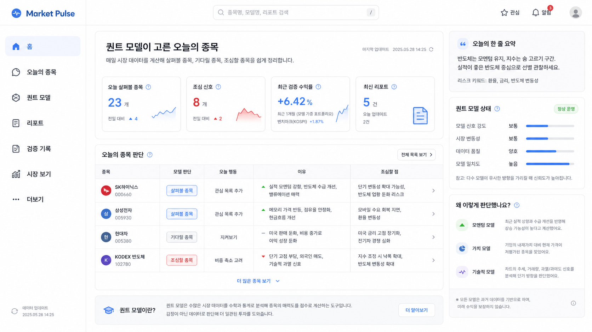

Market Pulse — Quant Home Planning Draft PRD
퀀트 모델 중심 홈 · 모바일 내비게이션 · 초보자용 언어 체계 · 구현 준비 문서
개요
시장/지수 중심 홈을 퀀트 모델 판단 중심 홈으로 전환한다.
핵심 문장
퀀트 모델이 고른 오늘의 종목
매일 시장 데이터를 계산해 살펴볼 종목, 기다릴 종목, 조심할 종목을 쉽게 정리합니다.
매일 시장 데이터를 계산해 살펴볼 종목, 기다릴 종목, 조심할 종목을 쉽게 정리합니다.
서비스 정체성
퀀트 모델이 시장 데이터를 검토하고 오늘의 판단을 쉬운 말로 보여준다.
첫 화면 답변
오늘 어떤 종목을 보고, 왜 봐야 하며, 무엇을 조심해야 하는지 답한다.
구현 방향
새 홈은 QuantHome으로 분리하고 기존 시장 홈은 /market으로 이동한다.
기준 목업
아래 이미지를 비율, 밀도, 우측 레일, 종목 배지의 기준으로 사용한다.

제품 목표
홈 화면이 반드시 달성해야 하는 목표와 제외 범위.
Primary Goal
Market Pulse를 "퀀트 모델이 매일 주식시장 데이터를 확인하고 오늘의 종목 판단을 설명하는 서비스"로 즉시 이해시킨다.
Non-Goals
마케팅 랜딩 페이지를 만들지 않는다. `퀀트 모델` 키워드를 숨기지 않는다. 별도 m. 사이트를 만들지 않는다. 로또/타로를 투자 판단 흐름에 섞지 않는다.
대상 사용자
홈이 사용자별로 답해야 하는 질문.
| User | Need | Home Should Answer |
|---|---|---|
| 초보 투자자 | 전문 용어 없이 판단을 보고 싶다 | 오늘 뭘 보면 되지? |
| 재방문 사용자 | 매일 바뀐 종목을 빠르게 확인한다 | 오늘 달라진 종목이 있나? |
| 근거 중시 사용자 | 모델 판단의 이유와 검증 기록을 본다 | 왜 이렇게 판단했고 과거에는 어땠나? |
| 운영자 | 데이터/모델 운영 상태를 관리한다 | 수집, 실행, 캐시는 정상인가? |
정보 구조
데스크톱과 모바일은 같은 서비스를 다른 탐색 구조로 보여준다.
Desktop Sidebar
홈
오늘의 종목
퀀트 모델
리포트
검증 기록
시장 보기
더보기
마이페이지는 데스크톱 사이드바에 두지 않고 우측 상단 프로필 메뉴로 진입한다.
Mobile Bottom Navigation
시장
모델
홈
서비스
마이
홈은 가운데 배치한다. 오늘의 종목과 리포트는 홈에서 강하게 진입시킨다.
| Area | Route Direction | Purpose | Priority |
|---|---|---|---|
| 홈 | / | 퀀트 모델 중심 메인 | P0 |
| 오늘의 종목 | /quant/today or /quant tab | 살펴볼/기다릴/조심할 종목 리스트 | P0 |
| 퀀트 모델 | /quant/models | 모델 목록, 상태, 설명 | P0 |
| 리포트 | /reports | 일간/주간 모델 근거 | P0 |
| 검증 기록 | /quant/backtest or /quant/evidence | 백테스트와 검증 기록 | P1 |
| 시장 보기 | /market | 기존 지수/뉴스/수급 화면 | P1 |
| 서비스 | /services | 로또, 타로 | P2 |
| 마이 | /my | 프로필, 관심, 메모, 알림, 저장 리포트 | P1 |
홈 화면 상세
홈은 "오늘의 판단"을 중심으로 한 실사용 대시보드다.
Main Dashboard
| Order | Section | Purpose |
|---|---|---|
| 1 | Hero | 퀀트 모델 설명, 업데이트 시간 |
| 2 | KPI | 오늘 살펴볼 종목, 조심 신호, 검증 수익률, 최신 리포트 |
| 3 | Decision Table | 종목, 판단, 행동, 이유, 조심할 점 |
| 4 | Explainer | 퀀트 모델이란? |
Right Insight Rail
| Order | Panel | Purpose |
|---|---|---|
| 1 | 오늘의 한 줄 요약 | 초보자용 일일 요약 |
| 2 | 퀀트 모델 상태 | 신호 강도, 변동성, 데이터 품질, 모델 일치도 |
| 3 | 왜 이렇게 판단했나요? | 모멘텀, 가치, 기술적 이유 |
| 4 | 면책 문구 | 과거 데이터 기반, 미래 수익 보장 아님 |
오늘의 종목 판단 테이블
| Field | Example | Rule |
|---|---|---|
| 종목 | SK하이닉스 / 000660 | 원형 배지 + 종목명 + 코드 |
| 모델 판단 | 살펴볼 종목 | 과도한 색상 금지 |
| 오늘 행동 | 관심 목록 추가 | 실행 가능한 쉬운 문장 |
| 이유 | 실적 모멘텀 강함, 수급 개선 | 최대 2개 짧은 이유 |
| 조심할 점 | 단기 변동성 확대 가능성 | 최대 2개 짧은 주의점 |
모바일 계획
모바일은 같은 route와 API를 쓰되 wide table 대신 카드 리스트를 사용한다.
Mobile Home Order
Header
프로필/검색 compact row
Title
퀀트 모델 설명
KPI
2x2 compact cards
Decision Cards
오늘의 종목 카드 리스트
Report/Explainer
최신 리포트, 접힘 설명
Decision Card Shape
[badge] 종목명 [모델 판단]
code
오늘 행동
이유 1~2줄
조심할 점 1줄
여러 모델, tap to expand
마이 / 서비스 / Admin
개인화, 부가 서비스, 운영 기능을 핵심 투자 판단 흐름과 분리한다.
마이
프로필, 관심 종목, 내 메모, 알림 설정, 저장한 리포트, 계정 정보. 모바일에서는 하단 `마이` 탭으로 진입한다.
서비스
로또와 타로를 묶는다. 퀀트 홈의 투자 판단 흐름에는 섞지 않는다.
Admin
ADMIN에게만 보인다. 데이터 수집, 모델 실행, 캐시, 사용자, 로그를 운영한다.
데이터 요구사항
초기에는 기존 API를 조합하고, 이후 홈 aggregation API로 정리한다.
QuantHomeResponse
interface QuantHomeResponse {
asOf: string;
summaryText: string;
kpis: QuantHomeKpis;
decisions: QuantHomeDecision[];
modelState: QuantHomeModelState;
latestReports: QuantHomeReportSummary[];
}
QuantHomeDecision
interface QuantHomeDecision {
assetCode: string;
assetName: string;
modelNames: string[];
modelLabel: "상승장 모델" | "횡보장 모델" | "하락장 모델" | "여러 모델";
decisionLabel: "살펴볼 종목" | "기다릴 종목" | "조심할 종목";
actionText: string;
reasonBullets: string[];
cautionBullets: string[];
}
상태 설계
구현 시 반드시 필요한 loading/empty/error 상태.
| State | UX |
|---|---|
| Loading | skeleton cards and rows |
| No decisions | 오늘 표시할 종목이 없습니다. 최신 리포트를 확인해 주세요. |
| Data delayed | right-rail notice with as-of time |
| API error | compact error card with retry |
| Unauthenticated | public read or login CTA, depending on policy |
프론트 구조
새 홈은 별도 페이지로 만들고 기존 대형 파일에 더 붙이지 않는다.
Recommended Folder
src/pages/QuantHome/
index.tsx
components/
QuantHomeHeader.tsx
QuantHomeKpiGrid.tsx
TodayDecisionTable.tsx
TodayDecisionMobileList.tsx
QuantInsightRail.tsx
QuantModelExplainer.tsx
StockInitialBadge.tsx
hooks/
useQuantHomeData.ts
quantHomeTypes.ts
Route Direction
/ -> QuantHome
/market -> existing Dashboard
`src/pages/QuantDashboard/index.tsx`는 이미 크므로 홈 책임을 추가하지 않는다.
구현 단계
정적 홈 shell에서 시작해 API 연결과 route 정리로 확장한다.
Phase 1: Static Home Shell
QuantHome, static sample data, desktop/mobile layout, /market route direction.
Phase 2: Navigation And Permissions
desktop sidebar, mobile bottom nav, profile/my, admin visibility.
Phase 3: Data Wiring
compose quant/report APIs, loading/empty/error states, multiple-model hover/tap.
Phase 4: Route Cleanup
decide /quant role, connect validation, split large QuantDashboard file.
수용 기준
홈 화면 구현이 완료됐다고 판단하는 기준.
| Criterion | Required |
|---|---|
| First understanding | 첫 방문자가 5초 안에 서비스 목적을 이해한다. |
| Keyword | `퀀트 모델` 키워드가 첫 화면에 보인다. |
| Language | 오늘의 종목 판단을 쉬운 말로 설명한다. |
| Desktop ratio | 기준 목업 비율과 밀도를 유지한다. |
| Mobile nav | 시장 | 모델 | 홈 | 서비스 | 마이 |
| Mobile presentation | wide table 대신 카드 리스트를 사용한다. |
| Services | 로또/타로는 서비스 영역으로 분리한다. |
| Admin | 일반 사용자에게 관리자 기능이 보이지 않는다. |
| Color | red/blue는 시장 방향에만 사용한다. |
| Stock badge | 종목 행은 원형 이니셜 배지를 사용한다. |
다음 단계는 `src/pages/QuantHome/` 정적 shell 구현 계획 작성이다. API 연결은 레이아웃과 언어가 확정된 뒤 진행한다.